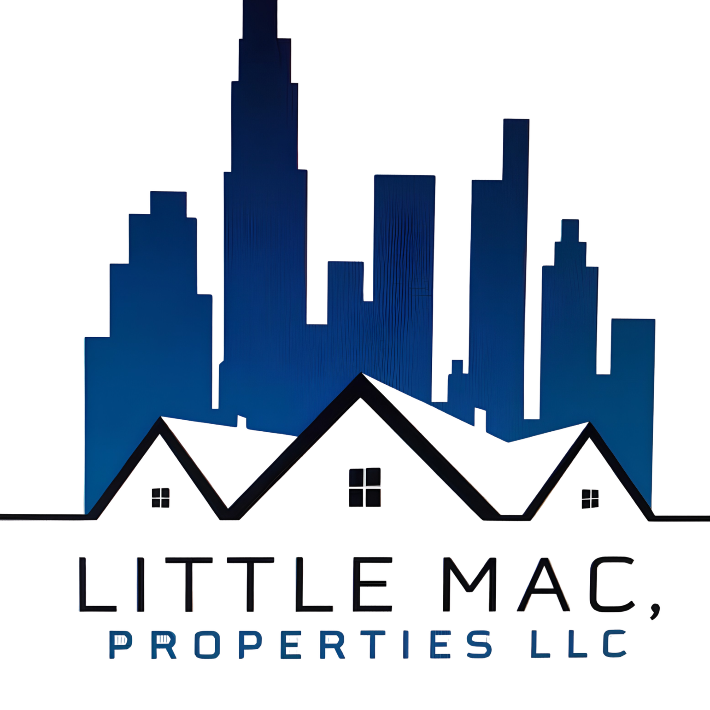

Vivienda de presentación 01
Compra de vivienda
Exterior e interior de muestra para visualizar el tipo de conversación que podemos iniciar.

Little MacProperties LLC · Hobbs, NMBienvenido a Hobbs, Nuevo México
Compra, renta una vivienda o encuentra una yarda para tu operación. Todo empieza con una conversación local.
Tu siguiente lugar empieza aquí
Little Mac es una inmobiliaria local para comprar, rentar o encontrar el espacio operativo que necesitas en Hobbs.
Conoce a nuestro equipo →Comprar, rentar o encontrar un espacio operativo.
Una conversación local para orientar tu siguiente paso.
Inventario, precios y condiciones se comparten directamente.
Elige tu ruta
Este borrador está organizado alrededor de las conversaciones que queremos tener contigo.
Busco una casa para establecerme o dar mi siguiente paso.
Ver compra de vivienda → 02 · ViviendaNecesito un hogar que se ajuste a mi momento actual.
Ver renta de vivienda → 03 · Espacio operativoQuiero comprar o rentar espacio para equipo, operación o almacenamiento.
Ver opciones de yardas →Galería de presentación
Estas imágenes son referencias visuales para esta presentación. No representan propiedades disponibles ni condiciones de venta o renta.
Disponible ahora · Hobbs, NM
Una opción real de renta para contratistas, almacenamiento de equipo y estacionamiento de camiones o remolques.
3 acres · terreno plano · cercado
Consulta disponibilidad o agenda una visita:
Fichas de ejemplo
Cada ficha abre una mini galería de presentación. Son muestras visuales: no son anuncios, no incluyen precio y no representan propiedades reales.
Exterior e interior de muestra para visualizar el tipo de conversación que podemos iniciar.
Sala y habitación de muestra para presentar posibilidades de una vivienda en renta.
Espacio y acceso de muestra para explicar las necesidades operativas a considerar.
Compra de vivienda
Desde tu primera visita hasta el momento de las llaves, te acompañamos a buscar una casa que encaje con tus planes.
Quiero comprar →Renta de vivienda
Encuentra una vivienda en renta que haga sentido para tu ritmo, tu familia y el momento en el que estás.
Quiero rentar →Venta y renta de yardas
Explora yardas disponibles para compra o renta: espacios prácticos para almacenamiento, equipo, trabajo u operación.
Busco comprar o rentar →Una ruta simple
Hablamos de lo que necesitas, dónde y para cuándo.
Te ayudamos a enfocar la búsqueda y a visitar espacios que sí tienen sentido.
Te acompañamos en los siguientes pasos para que decidas con confianza.
Detalles que se confirman contigo
En lugar de mostrar datos que pueden cambiar, este borrador abre la conversación y deja claro qué revisaremos contigo.
Zona deseada, tipo de hogar, presupuesto y fecha estimada.
Necesidades de espacio, ubicación, duración y fecha de mudanza.
Uso previsto, dimensiones requeridas, acceso y horizonte de operación.
Preguntas frecuentes
Este borrador presenta compra y renta de vivienda, además de venta y renta de yardas en Hobbs, NM.
El inventario y las condiciones se confirman directamente con Little Mac; no se muestran listados ni precios de ejemplo en esta presentación.
Sí. La primera conversación sirve para entender tu plan y orientar la búsqueda o el tipo de espacio que podría funcionarte.
Little Mac · Hobbs, NM
Cuéntanos si buscas comprar, rentar una vivienda o rentar una yarda. Te responderemos con el siguiente paso correcto.
Llamar a Little Mac → aux1@cctrsnm.comContacto directo para propiedades y yardas disponibles.